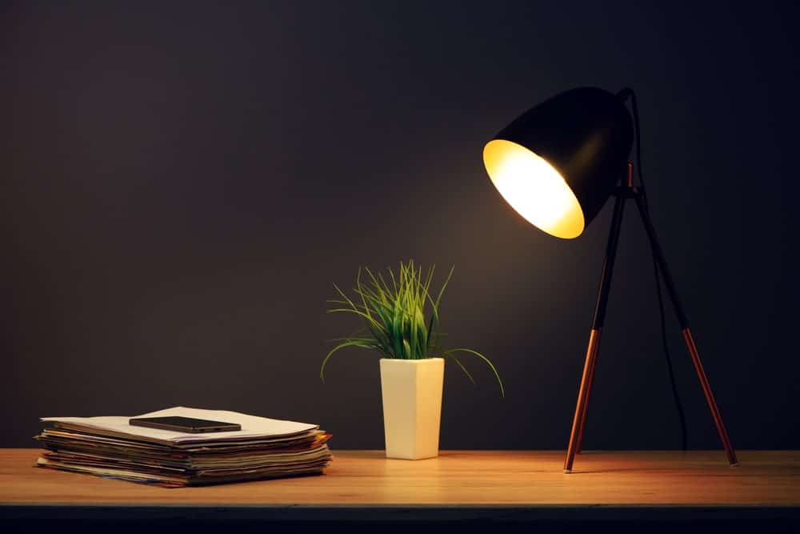

This allows the completion of tasks such as reading, studying and way-finding. It is used where ambient light levels are insufficient for the task in hand. A reading lamp is an example, as are under-cabinet lights.
यह पढ़ने, अध्ययन करने और रास्ता खोजने जैसे कार्यों को पूरा करने की अनुमति देता है। इसका उपयोग वहां किया जाता है जहां हाथ में लिए गए कार्य के लिए परिवेशी प्रकाश स्तर अपर्याप्त होते हैं। एक रीडिंग लैंप एक उदाहरण है, जैसा कि अंडर-कैबिनेट लाइट्स हैं।
